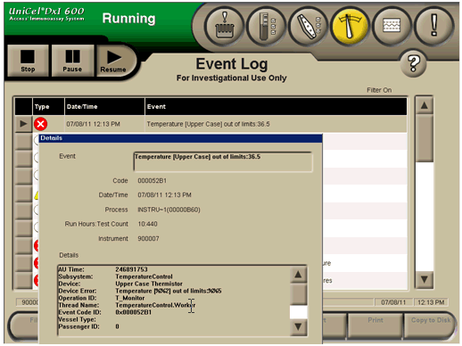

Software Version 3.3 3.3.1
Access 2 Software Release Notes Version 3.3 and 3.3.1
Intended Use
For Internal Use Only - Sensitive data intended for use within BCI and normally shared with employees. There may be an occasional need to distribute this data outside the company with Management approval.
Scope
Software version 3.3 is based on the previous release 3.2 code base and will support both XP and NT consoles.
DxC600i platforms will require a separate software release and is outside the scope for v3.3. Access (base) and LXi 725 platforms are also out of scope for the thermal software project.
Software 3.3 and 3.3.1 Features
- the capability to implement thermal algorithms (adjust patient dose results as a function of temperature)
- internal case temperature monitoring
- addition of the U command to optimize reagent pack mixing - improves the consistency of the reagent probe ultrasonic frequency function as the probe enters the reagent pack and maintains the frequency for the entire duration of the mix cycle, improving the mixing of the paramagnetic particle reagent
- SYS flags to suppress results, for all assays, if internal case temperature is outside of 18 - 36 C
- SYS flags to suppress results, for all assays, if the internal case temperature varies by more than 6° C
Algorithms will be released in APF versions and will be assay specific. They will utilize instrument temperatures (at time of patient sample processing and at assay calibration) to adjust patient dose values.
Version 3.3.1 adds two new pipetting/mixing commands, I and V, for the support of future assays (Vitamin D and others). It also corrects the Diagnostic Copy to Disk (DCTD) file truncation of RLUs when the number has more than six significant figures.
Implementation
Software v3.3 released and was exercised in limited distribution but did not go into general distribution, due to the timing of subsequent versions. Version 3.3.1 was released and is the first thermal software version for world wide distribution. Version 3.3.1 and APF release 2013A will be implemented together via mods 11133 for the US and mod 11273 for OUS. Implementation will be a controlled, phased, rollout as individual countries achieve regulatory clearance.
Documentation Changes
- the instrument ambient operating temperature range change from 18 - 32 C to 18 - 28 C.
- the internal case temperature range of 18 - 36°C.
Example Event Log Messages
Screen shots from when instrument case temperature is out of limits, DxI and A2 messaging is equivalent.


Expected Behavior
| Behavior | Explanation |
|---|---|
| User Interface exit after rearranging samples on rack and selecting Run.
Error message: "MFC Exception, A database error (code = -2041) occurred. An attempt was made to lock an object or a class that is locked by another user." errors |
The User Interface may exit after selecting the Run button seconds after selecting
.
If the User Interface exits, then select to launch the UI. To prevent the error, select Done rather than Cancel after rearranging samples. |
| SYS Flags with Event | SYS flags will occur on test results if the upper case temperature is outside of 18 °C to 36 °C. An event log Temperature [Upper Case] out of limits will also post to the event log. |
| SYS Flags with no Event | SYS flags will occur on test results, if the temperature varies by more than 6 °C while remaining within 18 °C to 36 °C during test processing (from the first aspiration to test completion). No event will post for this condition. The cause of the SYS flag can be confirmed by viewing the temperature logging data in the Copy to Diagnostic Disk. |
| Calibration Curve Failure reason "Temp Out" | Calibration curves will fail with a reason of "Temp Out" if the internal case temperature changes more than 6 °C during the processing of a calibration. |
| Internal Case Temperature Monitoring | In the Maintenance Review screen, the "internal case" box will turn red if the internal case temperature is out of range. |
| Instrument will run samples even if the case temperature is out of range | When the case temperature is out of range, the instrument will generate an event log and flag any results with SYS flags. However, the instrument will continue to process new samples if the user continues to load racks or press Run from the Ready Mode. |
| Diagnostic Copy to Disk | The diagnostic copy to disk contains additional information:
1. New columns at the top of the file: · Column BB: Result Temp · Column BC: Result Temp Calculation Method · Column BD: Expression · Column BE: Unadjusted Result · Column BF: Adjusted Result · Column BG: Curve Temp · Column BH: Curve Temp Calculation Method 2. New section "BO_Temps_Record" contains test serial # and temperature data for each test. Example file: ArcData3_3_1.csv |